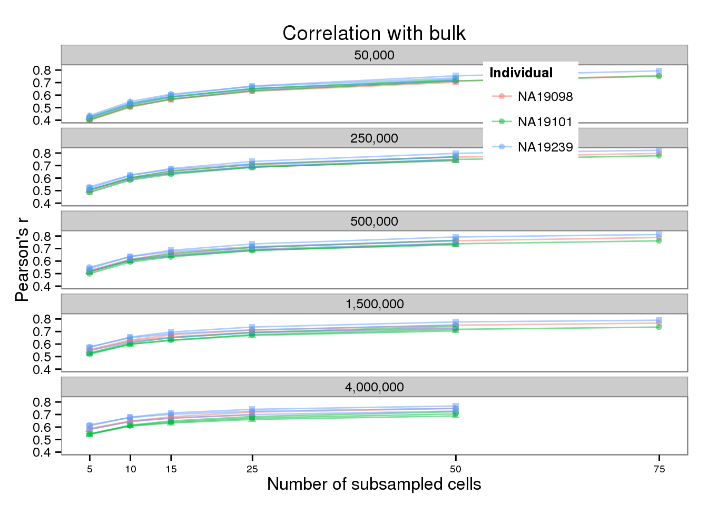
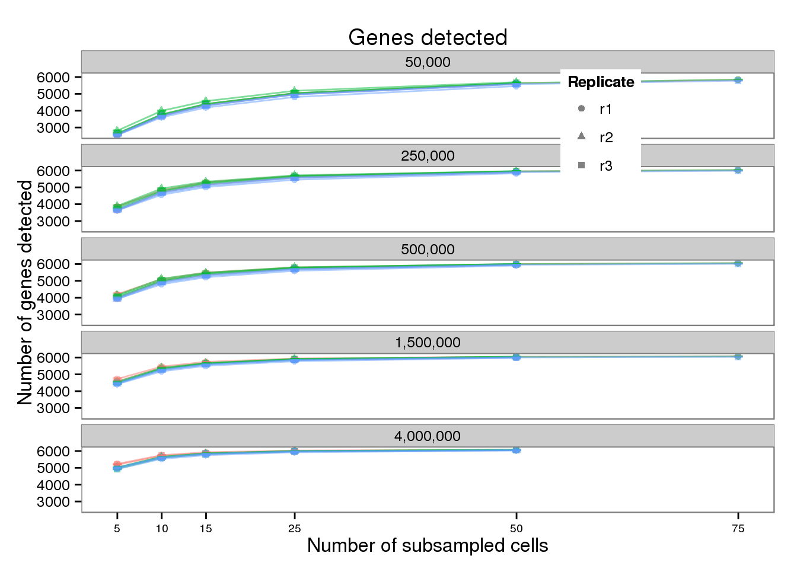
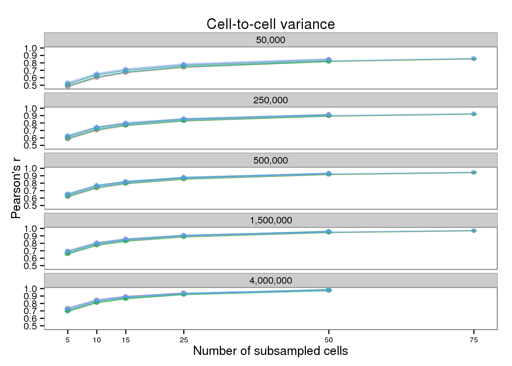
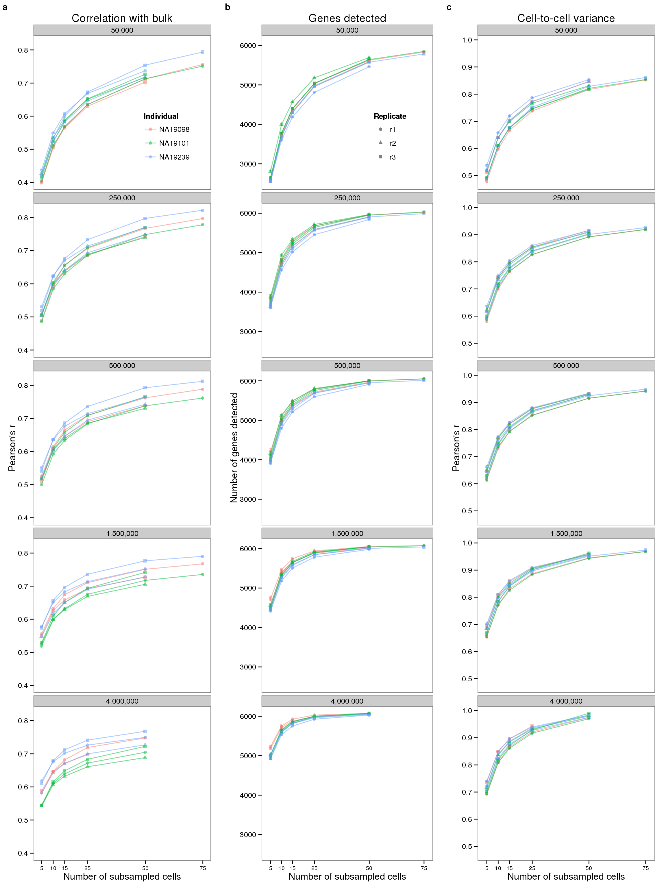

Last updated: 2016-11-08
Code version: bd286a36f14d3b332285cdc7e62258b1f616bb14
The reviewers asked to see the results of the subsampling for each batch. The data was created with subsample-pipeline-rep.py. The analysis below was modified from the original analysis for Figure 2.
library("dplyr")
library("tidyr")
library("ggplot2")
library("cowplot")
theme_set(theme_bw(base_size = 12))
theme_update(panel.grid.minor.x = element_blank(),
panel.grid.minor.y = element_blank(),
panel.grid.major.x = element_blank(),
panel.grid.major.y = element_blank(),
legend.key = element_blank())d <- read.table("../data/subsampling-results-rep.txt",
header = TRUE, sep = "\t", stringsAsFactors = FALSE)
str(d)'data.frame': 12660 obs. of 25 variables:
$ type : chr "reads" "reads" "molecules" "molecules" ...
$ depth : int 50000 50000 50000 50000 50000 50000 50000 50000 50000 50000 ...
$ gene_subset : chr "all" "all" "all" "all" ...
$ seed : int 1 1 1 1 2 2 2 2 3 3 ...
$ subsampled_cells: int 5 5 5 5 5 5 5 5 5 5 ...
$ individual : chr "NA19098" "NA19098" "NA19098" "NA19098" ...
$ replicate : chr "r1" "r3" "r1" "r3" ...
$ lower_q : num 0 0 0 0 0 0 0 0 0 0 ...
$ upper_q : num 1 1 1 1 1 1 1 1 1 1 ...
$ available_ensg : int 12192 12192 12192 12192 12192 12192 12192 12192 12192 12192 ...
$ used_ensg : int 12192 12192 12192 12192 12192 12192 12192 12192 12192 12192 ...
$ available_ercc : int 43 43 43 43 43 43 43 43 43 43 ...
$ used_ercc : int 43 43 43 43 43 43 43 43 43 43 ...
$ potential_cells : int 85 57 85 57 85 57 85 57 85 57 ...
$ available_cells : int 85 57 85 57 85 57 85 57 85 57 ...
$ pearson_ensg : num 0.815 0.778 0.825 0.794 0.79 ...
$ pearson_ercc : num 0.911 0.934 0.918 0.935 0.916 ...
$ spearman_ensg : num 0.826 0.782 0.836 0.799 0.796 ...
$ spearman_ercc : num 0.913 0.902 0.912 0.908 0.907 ...
$ detected_ensg : int 8470 8322 8470 8322 8200 8409 8200 8409 8366 8283 ...
$ detected_ercc : int 25 27 25 27 29 28 29 28 25 24 ...
$ mean_counts_ensg: num 24282 23583 15906 13533 22905 ...
$ mean_counts_ercc: num 284 401 191 226 454 ...
$ var_pearson : num 0.823 0.807 0.847 0.843 0.812 ...
$ var_spearman : num 0.791 0.772 0.812 0.799 0.771 ...d_grouped <- d %>%
group_by(type, depth, gene_subset, subsampled_cells,
individual, replicate, potential_cells, available_cells,
lower_q, upper_q, available_ensg, used_ensg,
available_ercc, used_ercc) %>%
summarize(mean_detected = mean(detected_ensg),
sem_detected = sd(detected_ensg) / sqrt(length(detected_ensg)),
mean_bulk = mean(pearson_ensg),
sem_bulk = sd(pearson_ensg) / sqrt(length(pearson_ensg)),
mean_var = mean(var_pearson),
sem_var = sd(var_pearson) / sqrt(length(var_pearson)))d_filter <- d_grouped %>% filter(type == "molecules",
gene_subset %in% c("lower")) %>%
mutate(batch = paste(individual, replicate, sep = "-"))
d_filter$depth2 <- factor(d_filter$depth,
labels = format(unique(d_filter$depth), big.mark = ",",
scientifc = FALSE, trim = TRUE))plot_base <- ggplot(d_filter,
aes(x = subsampled_cells,
color = individual, shape = replicate)) +
geom_point(alpha = 0.5) +
geom_line(alpha = 0.5) +
facet_wrap(~depth2, ncol = 1) +
scale_x_continuous(breaks = unique(d_filter$subsampled_cells)) +
scale_color_discrete(name = "Individual") +
scale_shape(name = "Replicate") +
theme(legend.position = "none", axis.text.x = element_text(size = rel(0.75)))plot_bulk <- plot_base %+% aes(y = mean_bulk) +
theme(legend.position = c(0.75, 0.875),
legend.key.size = grid::unit(0.25, "in")) +
guides(shape = FALSE) +
labs(x = "Number of subsampled cells",
y = "Pearson's r",
title = "Correlation with bulk")
plot_bulk
plot_detected <- plot_base %+% aes(y = mean_detected) +
geom_errorbar(aes(ymin = mean_detected - sem_detected,
ymax = mean_detected + sem_detected),
width = 1, alpha = 0.5) +
theme(legend.position = c(0.75, 0.875),
legend.key.size = grid::unit(0.25, "in")) +
guides(color = FALSE) +
labs(x = "Number of subsampled cells",
y = "Number of genes detected",
title = "Genes detected")
plot_detected
plot_var <- plot_base %+% aes(y = mean_var) +
geom_errorbar(aes(ymin = mean_var - sem_var,
ymax = mean_var + sem_var),
width = 1, alpha = 0.5) +
labs(x = "Number of subsampled cells",
y = "Pearson's r",
title = "Cell-to-cell variance")
plot_var
plot_final <- plot_grid(plot_bulk, plot_detected, plot_var,
ncol = 3, labels = letters[1:3], label_size = 12)
plot_final
tiff("../paper/figure/fig-subsample-rep.tiff",
width = 6 * 1.5, height = 8 * 1.5,
units = "in", res = 300, compression = "none")
plot_final
dev.off()png
2 sessionInfo()R version 3.2.0 (2015-04-16)
Platform: x86_64-unknown-linux-gnu (64-bit)
locale:
[1] LC_CTYPE=en_US.UTF-8 LC_NUMERIC=C
[3] LC_TIME=en_US.UTF-8 LC_COLLATE=en_US.UTF-8
[5] LC_MONETARY=en_US.UTF-8 LC_MESSAGES=en_US.UTF-8
[7] LC_PAPER=en_US.UTF-8 LC_NAME=C
[9] LC_ADDRESS=C LC_TELEPHONE=C
[11] LC_MEASUREMENT=en_US.UTF-8 LC_IDENTIFICATION=C
attached base packages:
[1] stats graphics grDevices utils datasets methods base
other attached packages:
[1] cowplot_0.3.1 ggplot2_1.0.1 tidyr_0.2.0 dplyr_0.4.2 knitr_1.10.5
loaded via a namespace (and not attached):
[1] Rcpp_0.12.4 magrittr_1.5 MASS_7.3-40 munsell_0.4.3
[5] colorspace_1.2-6 R6_2.1.1 stringr_1.0.0 httr_0.6.1
[9] plyr_1.8.3 tools_3.2.0 parallel_3.2.0 grid_3.2.0
[13] gtable_0.1.2 DBI_0.3.1 htmltools_0.2.6 lazyeval_0.1.10
[17] yaml_2.1.13 assertthat_0.1 digest_0.6.8 reshape2_1.4.1
[21] formatR_1.2 bitops_1.0-6 RCurl_1.95-4.6 evaluate_0.7
[25] rmarkdown_0.6.1 labeling_0.3 stringi_1.0-1 scales_0.4.0
[29] proto_0.3-10